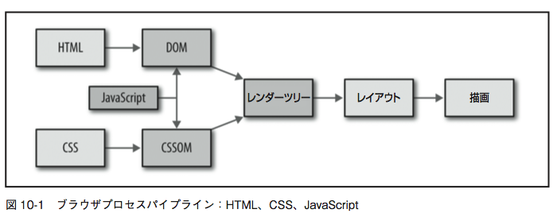
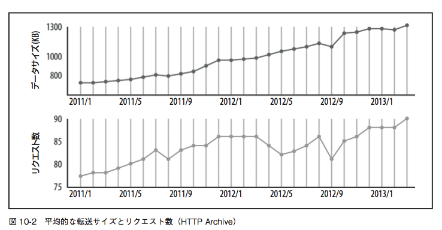
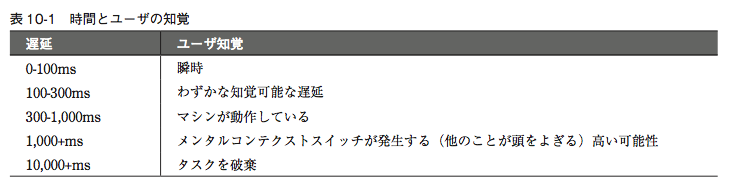
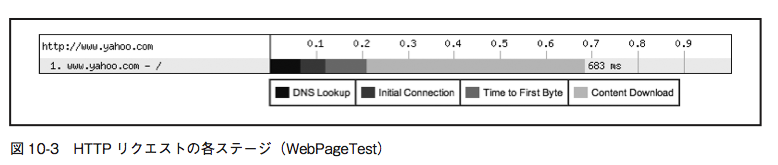
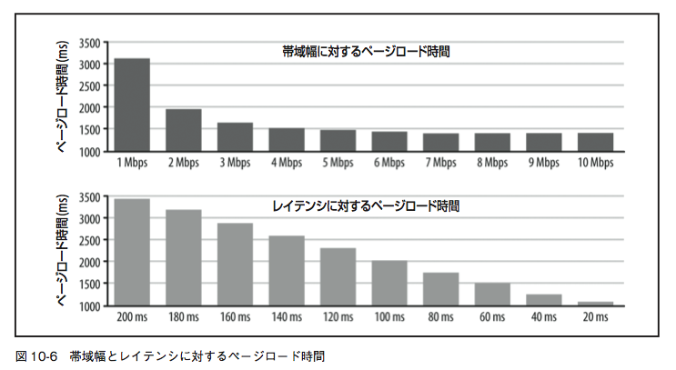
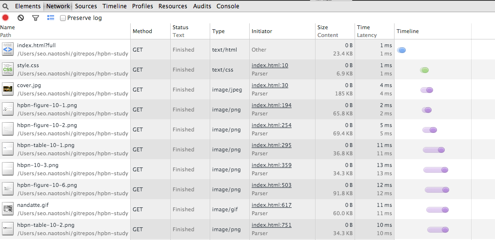
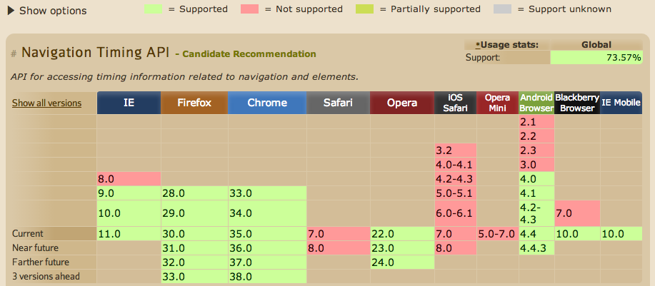
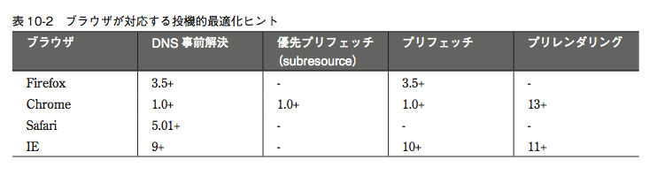

ハイパフォーマンスブラウザネットワーキング輪読会 第10章

Naotoshi Seo
10章では Web パ フォーマンス最適化におけるエンドツーエンドの状況を大局的に眺める
ブラウザがドキュメント構文の解析やレイアウトを行い、そしてスクリプトのパイプラインがドキュメントを画面に表示させるプロセス

平均的なWebアプリケーションは、1MB以上のサイズで、 約100の従属リソース、15の異なるホストから配信。 トレンドは右肩あがり。




> JSON.stringify(performance.timing, null, " ")
"{
"loadEventEnd": 1402937208542,
"loadEventStart": 1402937208541,
"domComplete": 1402937208541,
"domContentLoadedEventEnd": 1402937207548,
"domContentLoadedEventStart": 1402937207527,
"domInteractive": 1402937207527,
"domLoading": 1402937207080,
"responseEnd": 1402937207239,
"responseStart": 1402937207060,
"requestStart": 1402937206760,
"secureConnectionStart": 1402937206714,
"connectEnd": 1402937206760,
"connectStart": 1402937206714,
"domainLookupEnd": 1402937206714,
"domainLookupStart": 1402937206714,
"fetchStart": 1402937206711,
"redirectEnd": 0,
"redirectStart": 0,
"unloadEventEnd": 0,
"unloadEventStart": 0,
"navigationStart": 1402937206711
}"

しようと思ったけど、Github Pages からクロスドメイン ajax できなくて めんどくさくなってやめました ^^;
javascript:(function(){var s=document.createElement(‘script’);var head=document.getElementsByTagName(‘head’)[0];var done=false;s.charset=’UTF-8’;s.language=’javascript’;s.type=’text/javascript’;s.src=’https://rawgit.com/yuroyoro/nvtl-bookmarklet/master/navigation_timeline.js’;head.appendChild(s);})();

performance.mark('start1');
// something to measure
performance.mark('end1');
performance.measure('duration1', 'start1', 'end1');
ブラウザのサポート状況 http://caniuse.com/#search=navigation%20timing%20api

ページのヒント
<link rel="dns-prefetch" href="//hostname_to_resolve.com">
<link rel="subresource" href="/javascript/myapp.js">
<link rel="prefetch" href="/images/big.jpeg">
<link rel="prerender" href="//example.org/next_page.html">

╭( ･ㅂ･)و ̑̑